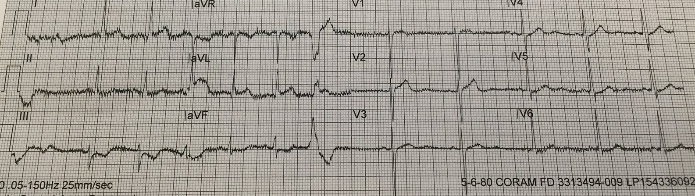
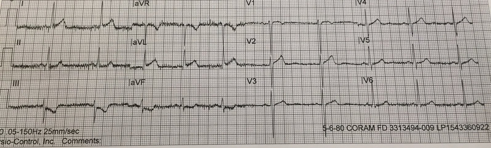
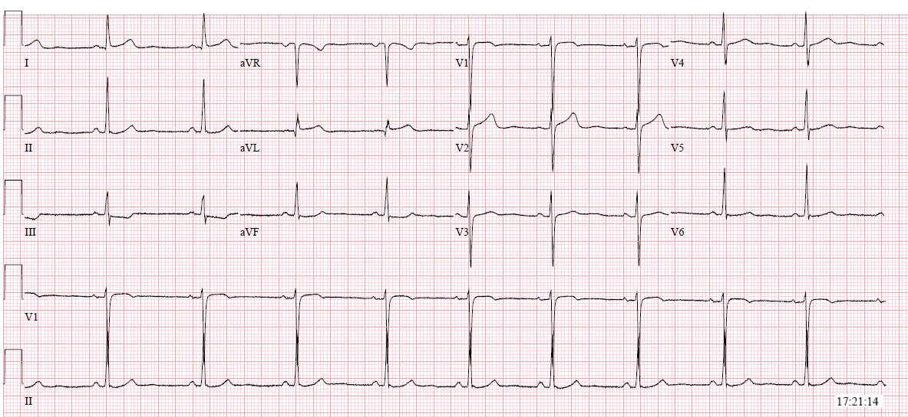
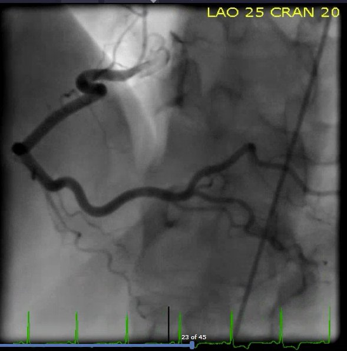
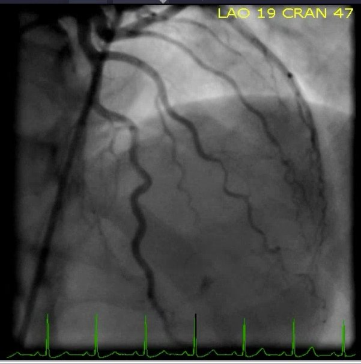
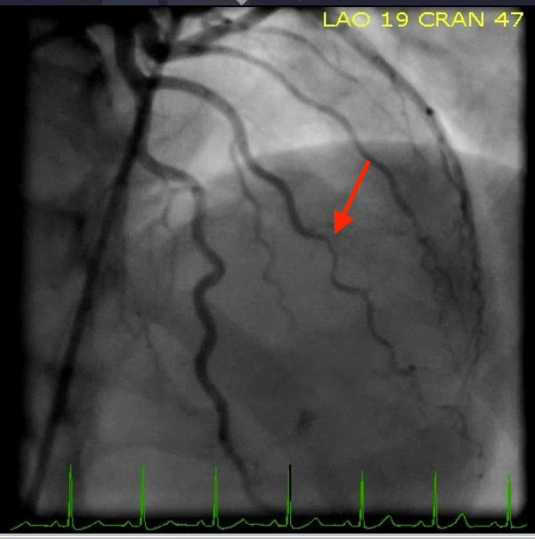
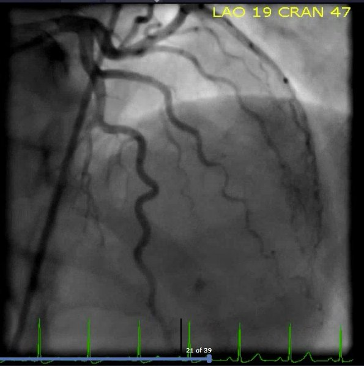
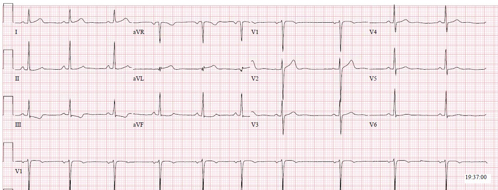
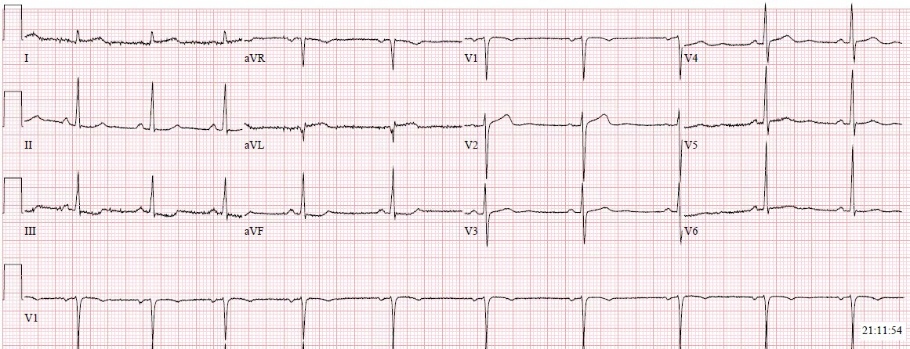
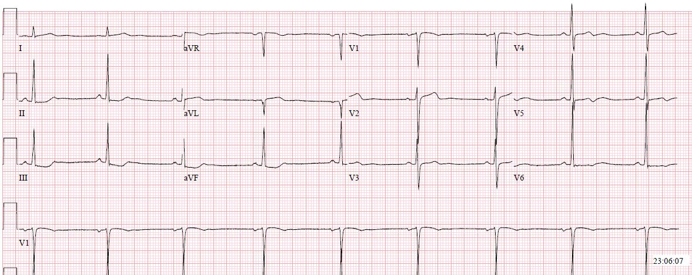

23/04/2018 — Nam 33 tuổi đau lưng cấp lan ra ngực
Bản dịch tiếng Việt của bài "A 33 year old male with acute back pain radiating to the chest" – Dr. Smith’s ECG Blog. Giữ nguyên toàn bộ 10 hình ảnh của bản gốc.
Bài viết của Pendell Meyers, Steve Smith biên tập
Ca bệnh
Tôi được gọi lên phòng điều phối của đội cấp cứu ngoài viện (EMS) để xử lý một trường hợp RMA (từ chối lời khuyên y khoa – Refusal of Medical Advice). Sau khi cuộc gọi kết thúc, ngay trước lúc tôi định quay lại guồng công việc ở khoa cấp cứu của chúng tôi, người đồng nghiệp tuyệt vời bên EMS là nhân viên cấp cứu ngoài viện Jess Boyle hỏi ý kiến tôi về 2 điện tâm đồ này của cùng một bệnh nhân, ghi liền nhau, mà không kèm bất kỳ thông tin lâm sàng nào khác:




Bạn nghĩ sao?
Cả hai điện tâm đồ đều là nhịp xoang với hình thái phức bộ QRS bình thường. Có ST chênh xuống ở chuyển đạo III và aVF kèm sóng T đảo ngược có “thể tích” lớn không tương xứng. Đây là thay đổi soi gương (reciprocal) với một mức ST chênh lên nhỏ ở chuyển đạo aVL, nơi diện tích dưới đoạn ST và sóng T lớn một cách đáng ngờ, gợi ý sóng T tối cấp. Trong bối cảnh ST chênh lên (STE) không tương xứng (không tương xứng với QRS) ở aVL kèm ST chênh xuống (STD) soi gương ở thành dưới, các sóng T này phải được xem là thực sự có giá trị chẩn đoán sóng T tối cấp. Ở điện tâm đồ thứ nhất, hãy nhìn kỹ nhát PVC xuất hiện ở các chuyển đạo aVR, aVL và aVF ngay trước khi bắt đầu các chuyển đạo trước tim. Bạn nhận thấy điều gì?
Có ST chênh lên đồng hướng ở nhát PVC đó trong chuyển đạo aVL. PVC, cũng như mọi dạng dẫn truyền bất thường khác (LBBB, nhịp tạo nhịp thất, v.v.), nhìn chung tuân theo quy tắc ngược hướng phù hợp (theo đó đoạn ST và sóng T sẽ lệch về phía ngược với phần lớn phức bộ QRS dẫn truyền bất thường). Vì vậy, nếu không có ST chênh lên chồng lên, nhát PVC ở aVL lẽ ra phải có đoạn ST đẳng điện hoặc chênh xuống theo sau sóng R lớn, dẫn truyền bất thường đó. Thay vào đó, điểm J nằm rõ ràng trên đường nền. Đây là ST chênh lên đồng hướng, và dựa trên rất nhiều kinh nghiệm với chính câu hỏi này cùng nhiều ca trước đây cho thấy điều đó, chúng tôi tin rằng dấu hiệu này cũng có giá trị chẩn đoán thiếu máu cục bộ xuyên thành cấp, giống như đã được chứng minh ở LBBB (và sắp tới là ở nhịp tạo nhịp thất).
Như vậy, điện tâm đồ này có giá trị chẩn đoán rằng thành bên cao vừa mới mất nguồn cấp máu. Điện tâm đồ phản ánh tình trạng cấp tính xuyên suốt bề dày cơ tim ở mức tế bào, và các tế bào không biết cũng chẳng quan tâm vì sao chúng đột ngột mất nguồn cấp máu – mọi nguyên nhân gây tắc mạch vành cấp, hay thậm chí thiếu máu cục bộ do mạch nhỏ như gặp trong bệnh cơ tim do stress Takotsubo, hoặc trong hiện tượng “không tái lưu” (No Reflow) sau khi mở thông một động mạch vành bị tắc, đều sẽ tạo ra cùng những thay đổi điện tâm đồ. Ở mức quần thể, nguyên nhân phổ biến nhất, vượt xa các nguyên nhân khác, gây tắc mạch vành cấp là hội chứng vành cấp (ACS) típ 1 (nứt vỡ mảng xơ vữa gây tắc cấp do huyết khối). Nhưng hãy nhớ, điện tâm đồ chỉ cho thấy sự thật là có tắc mạch, chứ không cho thấy nguyên nhân gây tắc.
Quay lại ca bệnh:
Điện tâm đồ đã được gửi tới bác sĩ điều phối y tế (medical control) khoảng 15 phút trước khi tôi xem, và người bạn nhân viên cấp cứu ngoài viện của tôi đã lo lắng về nó nên lập tức mang tới cho một bác sĩ khoa cấp cứu (ED) xem. Dù anh ấy đã nói rằng mình lo về aVL và các thay đổi soi gương ở thành dưới, bác sĩ điều trị chính xem bản ghi lại không đồng ý và không cho rằng nó đủ để kích hoạt phòng thông tim (cath lab) từ trước viện.
Tôi lập tức lo lắng về những gì có thể xảy ra với bệnh nhân. Tôi hỏi anh ấy bệnh nhân đã được chuyển tới bệnh viện nào (bộ phận điều phối y tế của chúng tôi giám sát nhiều bệnh viện khác nhau). May mắn thay, anh ấy trả lời rằng bệnh nhân vừa mới tới khoa cấp cứu của chúng tôi! Vì vậy tôi đi tìm bệnh nhân và để chắc chắn rằng nhóm tiếp nhận đã có bản sao các điện tâm đồ trước viện này.
Hóa ra nhóm tiếp nhận chưa có bản sao các điện tâm đồ trước viện này. Tôi đưa cho họ các điện tâm đồ, nói với họ những lo ngại của tôi, và hỏi một số thông tin về bệnh nhân:
Đó là một bệnh nhân nam 33 tuổi, có tiền sử hen phế quản và hút thuốc lá, đã gọi EMS vì cảm giác đè nặng ngực khởi phát đột ngột từ 1 giờ trước khi đến. Anh kể vừa đi tiểu xong, đang với tay giật nước bồn cầu thì đột nhiên thấy đau quặn ở giữa lưng. Khi anh lập tức nằm xuống, cơn đau lan ra giữa ngực. Anh uống tylenol nhưng không đỡ, rồi gọi EMS. EMS cho dùng aspirin (ASA), nitroglycerin (NTG) và 5mg morphin, sau đó cơn đau giảm. Anh khẳng định chắc chắn không hề uống/nuốt chất gì, không dùng ma túy, cocaine, v.v.
Đây là điện tâm đồ đầu tiên của anh tại khoa cấp cứu, trong thời gian này anh được cho là đau mức 2/10, đã đỡ hơn so với lúc khởi phát:


Nhìn chung, nhóm điều trị đánh giá bệnh cảnh lâm sàng đang cải thiện, và không kích hoạt phòng thông tim ngay mà tiếp tục đánh giá tích cực tại giường cùng các điện tâm đồ liên tiếp.
Siêu âm tim tại giường không dùng thuốc cản âm không thấy rối loạn vận động thành đáng kể.
Kết quả troponin I tại chỗ bằng iStat là 0.38 ng/mL (tăng, bình thường dưới 0.08 ng/mL). Nhìn chung, troponin đo bằng iStat có thể không đáng tin cậy, mặc dù kết quả càng cao thì càng có khả năng là thật. Troponin T ban đầu là 0.04 ng/dL (cũng tăng nhẹ so với bình thường, vốn dưới 0.01 với xét nghiệm này).
Đến lúc này, chỉ ~20 phút sau khi đến viện, họ đã kích hoạt phòng thông tim.
Bệnh nhân được đưa đi thông tim ngay, kết quả cho thấy “đoạn giữa đến đoạn xa nhánh chéo thứ 1 hẹp 90% và đoạn giữa-xa thu nhỏ khẩu kính, có vẻ đang co thắt, không đáp ứng với NTG trong mạch vành và nicardipine trong mạch vành.” RCA và LCX bình thường. Xem các hình ảnh thông tim bên dưới.








Biên bản thông tim ghi nhận bệnh nhân cải thiện triệu chứng và các dấu hiệu điện tâm đồ, mặc dù hình ảnh chụp mạch không cải thiện sau khi bơm NTG và nicardipine trong mạch vành. Do có sự cải thiện này và nghi ngờ nguyên nhân là co thắt, họ không đặt stent mà dự định điều trị nội khoa cho bệnh nhân, gồm amlodipine và NTG khi cần.
Troponin T liên tiếp của anh tăng từ mức ban đầu 0.04 lên 0.43 rồi 0.66, sau đó bắt đầu có xu hướng giảm dần.
Đây là điện tâm đồ đầu tiên của anh sau thông tim:






Các bác sĩ tim mạch dự định thông tim lại sau vài tuần điều trị nội khoa để đánh giá lại xem có cần can thiệp gì thêm hay không.
Những điểm cần học:
Hãy bảo đảm bạn có một hệ thống để các điện tâm đồ của EMS luôn được chuyển tới nhóm tiếp nhận ở khoa cấp cứu mọi lần, kể cả khi ban đầu chúng được đọc là bình thường.
Điện tâm đồ không thể cho bạn biết nguyên nhân của OMI. Xét theo số liệu, phải mặc định nguyên nhân là loại được điều trị bằng liệu pháp tái tưới máu ngay lập tức (khi không có một nguyên nhân khác cụ thể đã biết). Đây không phải là OMI “dương tính giả”, mà đây là một trong số ít bệnh nhân có nguyên nhân gây OMI không phải là huyết khối. Cách phù hợp duy nhất để phân biệt co thắt gây tắc với huyết khối gây tắc là chụp mạch vành cấp cứu. Xem các ca co thắt khác của chúng tôi tại đây.
Bệnh nhân này chưa bao giờ đạt “tiêu chuẩn STEMI”, giống như nhiều trường hợp tắc và gần tắc mạch vành cấp rất nghiêm trọng khác.
Người trẻ cũng có thể bị nhồi máu cơ tim cấp.
Đừng quên tìm các dấu hiệu OMI trong các nhát PVC.
Tôi tin rằng ngay cả OMI/STEMI thoáng qua cũng nên được đưa vào phòng thông tim nếu khả thi, vì khó có khả năng bệnh nhân sẽ được ghi điện tâm đồ liên tiếp và theo dõi sát đủ để phát hiện tình trạng tắc lại trước khi mất thêm cơ tim, hoặc tệ hơn, ngay cả khi được chăm sóc bởi những người giỏi nhất.